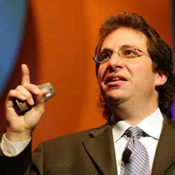

In Honor of Kevin Mitnick: A Tribute to a Trailblazing Cybersecurity
Expert
In the vast expanse of the digital age, amidst the constant hum of
technology's evolution, there are certain names that resonate deeply
within the realm of cybersecurity. One such name is Kevin Mitnick—a
figure whose life's narrative transcends the mere boundaries of
technological prowess and delves into the realms of redemption,
ethical evolution, and the enduring quest for knowledge.
As Mitnick himself once said, "The hacker mindset doesn't actually see
what happens on the other side, to the victim." His journey is a
tapestry woven with threads of curiosity, brilliance, controversy, and
transformation. His name is synonymous with hacking, cybersecurity,
and the delicate dance between innovation and responsibility in the
digital era. As we embark on this tribute, we delve into the
multifaceted layers of Mitnick's life, exploring the origins of his
passion, the milestones of his career, the challenges he faced, and
the legacy he leaves behind—a legacy that continues to shape the
cybersecurity landscape and inspire generations of technologists.
Kevin Mitnick's journey from a notorious hacker to a rewspected
cybersecurity consultant and advocate is a testament in the digital
age. His life story not only showcases the evolution of cybersecurity
awareness.
Early Life and Beginning:
The story of Kevin Mitnick begins on a warm summer day in Van Nuys,
California, on August 6, 1963. From a young age, Mitnick exhibited a
keen interest in the inner workings of technology—a fascination that
would shape the trajectory of his life. Growing up in an era when
computers were still in their infancy, Mitnick found himself drawn to
the allure of exploration and discovery within the digital realm.
As Mitnick once reflected, "I had to learn how to break into things,
and learn how to stop people from breaking into things." His early
experiences with technology were marked by a voracious appetite for
knowledge and a natural talent for deciphering complex systems. What
started as a hobby soon blossomed into a passion as Mitnick delved
deeper into programming, networking, and the intricacies of
cybersecurity. His innate curiosity and thirst for understanding laid
the groundwork for his future endeavors, setting him on a path that
would eventually lead to both acclaim and controversy.
Legal Troubles and Transformation:
Mitnick' hacking activities eventually caught up with him, leading to
legal troubles and a period of imprisonment. Despite the challenges he
faced, this phase became the turning point in his life. It sparked a
profound transformation, shifting his focus from malicious hacking to
ethical cybersecurity practices and advocacy.Mitnick' time behind the
bars served as a catalyst for introspection, growth, and a newfound
commitment to using his skills for positve purposes.

Rise to Prominence
The ascent of Kevin Mitnick into the annals of cybersecurity history
was nothing short of meteoric. With an unparalleled knack for
navigating the digital landscape, Mitnick quickly garnered attention
for his exceptional hacking skills. As he once remarked, "It's not
that I'm such a great hacker; it's that I can't resist a challenge."
Mitnick's ability to penetrate seemingly impregnable systems and
access sensitive information earned him a reputation as one of the
most elusive and skilled hackers of his time. His exploits, while
controversial, shed light on glaring vulnerabilities within digital
infrastructures, sparking conversations about the importance of
cybersecurity and the need for robust defenses against malicious
actors. His notoriety grew as he continued to push the boundaries of
what was thought possible, showcasing the power of knowledge,
innovation, and persistence in the face of technological challenges.
Redemption and Reinvention:
Following his release from prison, Mitnick embarked on a journey of
redemption and reinvention. He channeled his expertise and insights
into positive avenues, leveraging his knowledge to help organizations
bolster their cybersecurity defenses. Mitnick's transformation from a
notorious hacker to a respected cybersecurity consultant was a
testament to his resilience, adaptability, and commitment to ethical
conduct.
As Mitnick once stated, "I'm not a malicious hacker. I never tried to
hurt people. I was just having fun." His transition from a figure of
controversy to a trusted advisor marked a pivotal moment in his life,
showcasing the power of personal growth, redemption, and the
opportunity for positive change in the digital age.
Contributions to Cybersecurity:
Following his release, Mitnick emerged as a leading figure in
cybersecurity, leveraging his unique insights and experiences to
contribute significantly to the industry. His expertise in social
engineering, penetration testing, and vulnerability assessment became
invaluable assets. Mitnick's contributions extended beyond technical
realms; he became a prolific author, sharing his knowledge through
books, lectures, and training programs aimed at empowering individuals
and organizations to defend against cyber threats.
Ethical Hacking Advocacy
Mitnick's advocacy for ethical hacking and responsible disclosure
practices became a cornerstone of his legacy. He emphasized the
importance of understanding vulnerabilities to strengthen defenses,
highlighting that ethical hackers play a crucial role in safeguarding
digital ecosystems. His efforts in promoting cybersecurity education,
raising awareness about emerging threats, and bridging the gap between
cybersecurity professionals and the general public have had a lasting
impact.
Legacy and influence:
Kevin Mitnick's legacy extends far beyond his technical expertise; it
embodies resilience, redemption, and a commitment to making cyberspace
safer for everyone. His influence on cybersecurity practices, ethical
hacking frameworks, and cybersecurity awareness continues to resonate
globally. Countless individuals and organizations have benefited from
his teachings, guidance, and advocacy, shaping a more secure digital
landscape.
conclusion:
In conclusion, Kevin Mitnick's journey from a hacker to a
cybersecurity luminary exemplifies the power of personal growth and
the potential for positive impact in the digital era. His legacy
inspires future generations of cybersecurity professionals,
emphasizing the importance of ethical conduct, continuous learning,
and a shared responsibility in protecting digital assets. Kevin
Mitnick's contributions will forever be remembered as foundational
pillars in the ongoing evolution of cybersecurity and ethical hacking.